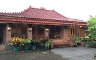
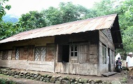
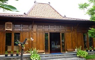
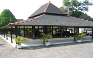

Rumah adat Joglo yaitu salah satu rumah adat Jawa tengah yang paling familiar
dibanding tipe rumah adat lainnya, dikenal sebagai lambang kekayaan sang pemilik,
maka tak heran jika pemilik rumah Joglo bukan sembarang orang.

Limasan
Rumah Adat Jawa Tengah
Rumah Adat Limasan
Sama halnya seperti rumah adat Kampung, Untuk mengenali rumah adat Limasan bukan dilihat dari jumlah penyangganya, seperti halnya pada rumah adat Kampung, namun dari bentuk atap rumah ini yang berbentuk limas.

Kampung
Rumah Adat Jawa Tengah
Rumah Adat Kampung
Rumah adat Kampung jika dilihat hampir mirip rumah Panggang Pe.
Ciri khas rumah Kampung yaitu pada bagian tiang, karena tiang-tiang yang digunakan umumnya adalah kelipatan dari empat,
kemudian dimulai dari angka delapan.

Panggang-Pe
Rumah Adat Jawa Tengah
Rumah Adat Panggang-Pe
Rumah adat Panggang Pe dilengkapi dengan empat hingga enam tiang.
Untuk tiang yang ada di sebelah depan biasanya sengaja dibuat lebih pendek dibanding tiang yang ada di belakang,
sehingga jika dilihat, bentuk rumah ini cukup unik

Tajug
Rumah Adat Jawa Tengah
Rumah Adat Tajug
Rumah adat Tajug yaitu salah satu jenis rumah adat Jawa Tengah yang biasa digunakan sebagai bangunan suci,
seperti masjid serta bangunan sakral lainnya. Karena rumah tajug ini memang telah diyakini sebagai rumah yang disucikan.